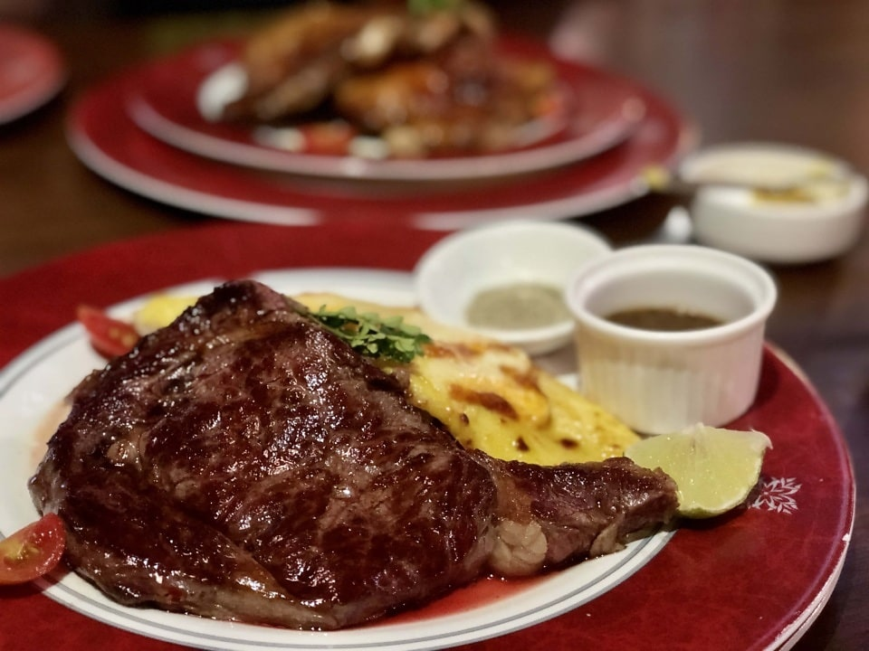

Minute Steaks with Barbecue Butter Sauce

Description
There's only a small amount of butter in this minute steak recipe, but the way it blends with the beef broth and barbecue sauce, the effect is amplified. Everyone knows that a minute steak is only as good as the pan sauce, and this recipe offers an ultra-simple barbecue butter sauce.
Ingredients
- 2 (5 ounce) boneless sirloin steaks
- salt and freshly ground black pepper to taste
- ½ cup beef broth
- 1 ½ tablespoons barbecue sauce
- 1 dash hot pepper sauce
- 1 teaspoon cold butter, or more to taste
- 1 tablespoon vegetable oil
Steps
- Place each steak between two sheets of heavy plastic (or inside a resealable freezer bag) on a solid, level surface. Firmly pound each steak with the smooth side of a meat mallet to a thickness of 1/4 inch. Discard the plastic and generously season steaks with salt and pepper.
- Make the barbecue butter sauce: Combine beef broth, barbecue sauce, hot sauce, and another pinch of pepper in a bowl. Add cold butter but do not stir.
- Heat oil in a large skillet over high heat until it just begins to smoke, about 1 minute. Place steaks into the pan and sear for 45 to 60 seconds on each side. Remove from the skillet and set aside to rest.
- Pour barbecue butter sauce into the skillet and bring to a boil while scraping the browned bits of food off the bottom of the pan with a wooden spoon. Stir occasionally until butter is melted and incorporated, about 2 minutes.
- Spoon barbecue butter sauce over steaks to serve.
Home